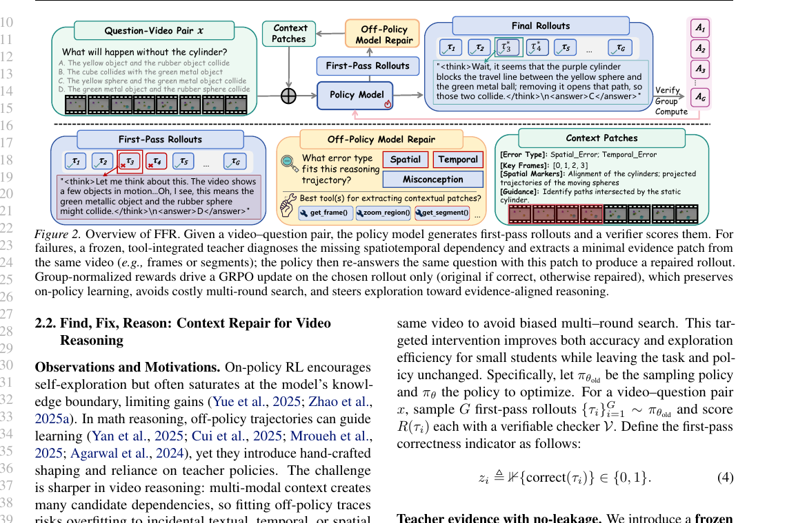
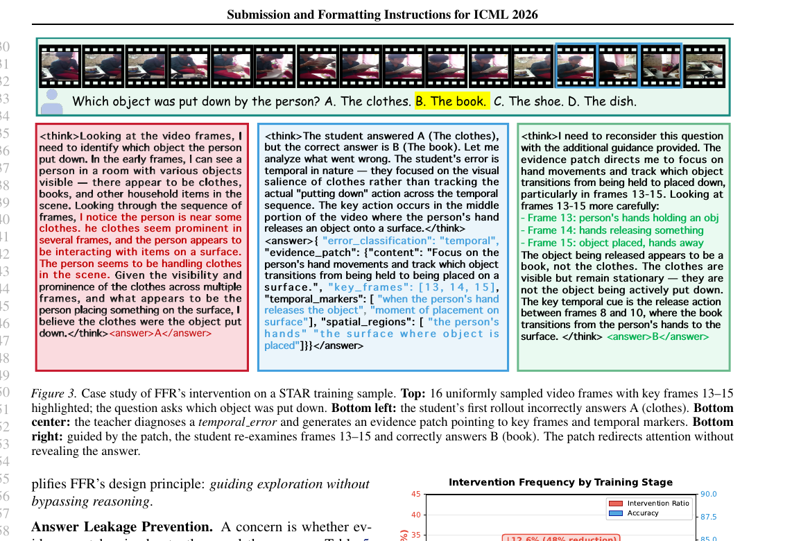

Abstract
Teaser figure

Training regimes at a glance
Overview
Why context repair matters
FFR keeps the policy on-policy, but intervenes exactly when a rollout misses the relevant spatiotemporal dependency.
Core insights
Method
Find, fix, then reason again
The teacher never changes the question. It only supplies a minimal evidence patch so the student can revisit the right part of the video.
Results
Interactive benchmark explorer
Toggle between the main comparison, ablations, teacher-model analysis, and patch-tax sensitivity. Values are transcribed from the paper and supplementary tables.
Case Lab
Interactive cases and leakage-safe guidance
Inspect how FFR turns a failed rollout into a corrected one, and how the teacher stays useful without leaking the answer.
Validation
Prompt discipline and training dynamics
Two checks anchor the story: the teacher must not leak the answer, and the student should rely less on intervention as training progresses.
Leakage analysis
| Prompt design | Direct | Partial | Total |
|---|
Intervention dynamics
Resources
Paper, supplement, and citation
The PDF assets are bundled locally in this project page so the site can be deployed directly through GitHub Pages.

BibTeX